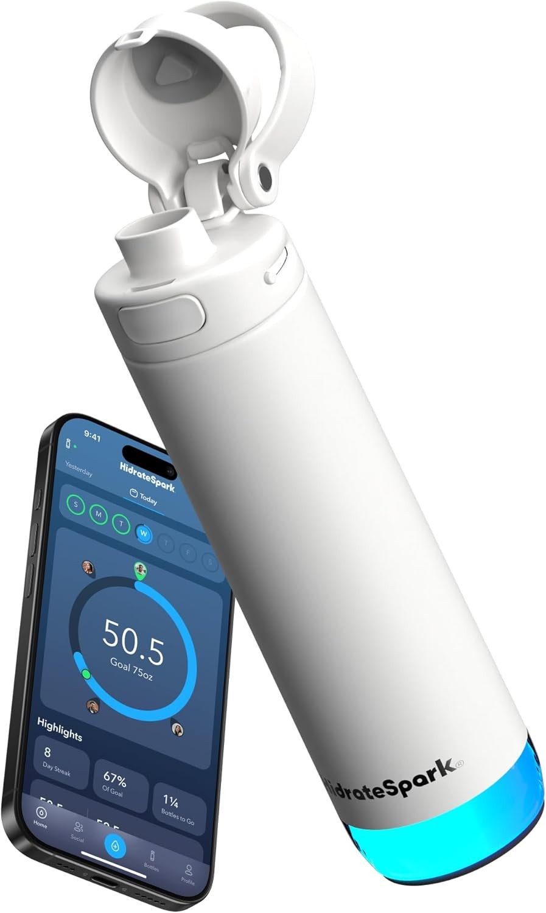
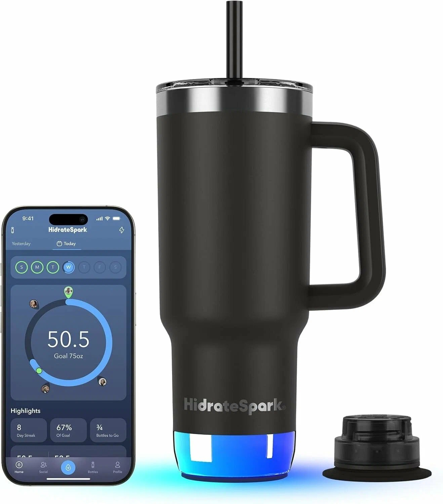
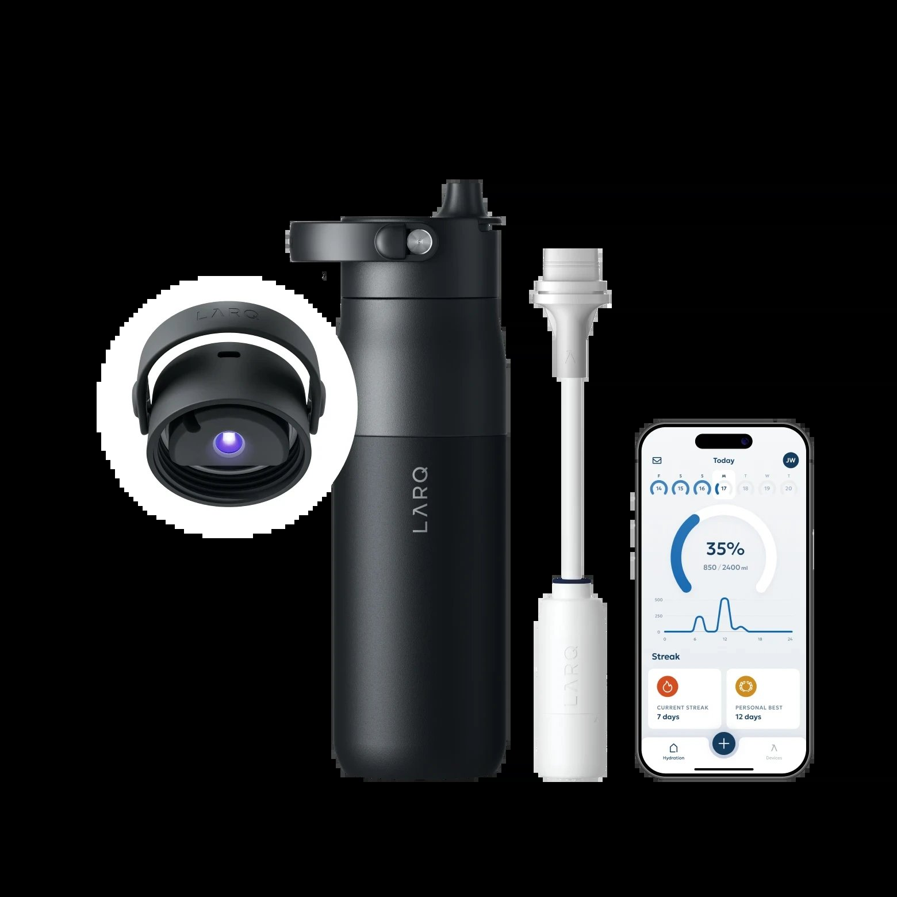
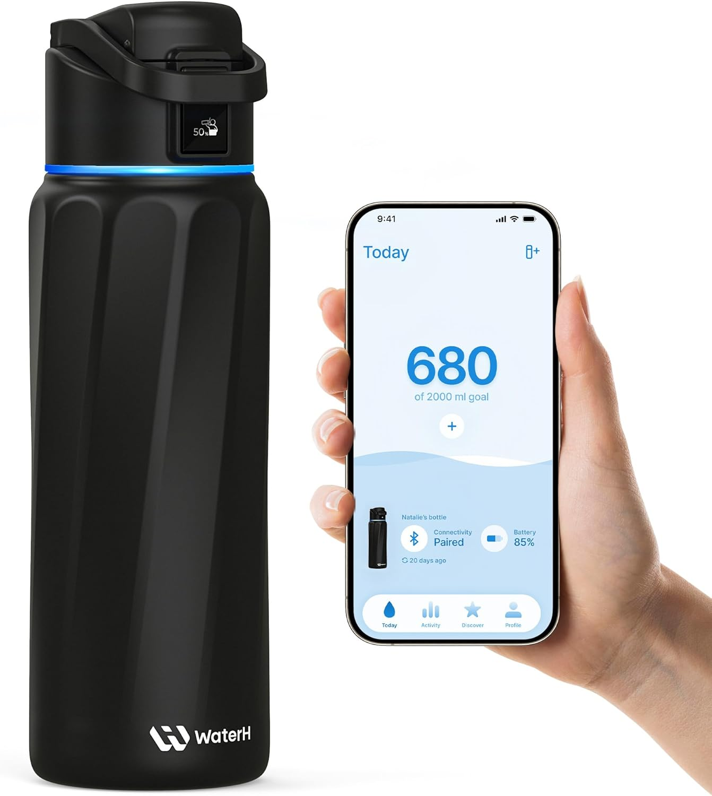
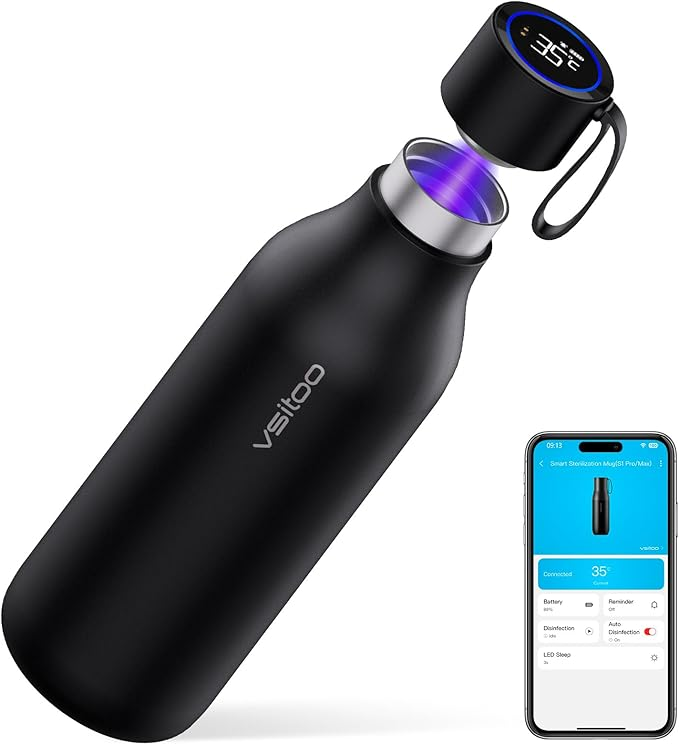

HidrateSpark PRO 2 и реальные альтернативы — почему точность измерения решает всё, и какие технологии реально работают.
Главный вывод
Независимая лаборатория Allion Labs протестировала популярную «умную» детскую бутылку (тилт/угол-based технология) и получила результат: отслежено только 30% реальных актов питья, средняя погрешность объёма — 36.8%. Это не маргинальный случай — это фундаментальное ограничение технологии измерения через угол наклона и время питья, а не вес.
Weight-based SipSense — взвешивает бутылку и содержимое напрямую, не оценивает по углу. Клинически подтверждена точность ~97% против ручных записей. Автосинхронизация в Apple Health, Fitbit, Health Connect без единого ручного ввода.
UV-C самоочистка каждые 2 часа + фильтрация. Трекинг — tilt-based (менее точный), весь учёт остаётся в собственном приложении LARQ, без синка с Apple Health/Fitbit.
Прогресс прямо на крышке без приложения. Tilt-based, погрешность ~15-20% после калибровки — сам производитель честно раскрывает это в приложении.
Главное технологическое различие на рынке — weight-based vs tilt-based измерение. Weight-based (HidrateSpark) взвешивает бутылку напрямую через сенсор-puck — единственный метод который остаётся точным независимо от того пьёшь ли ты быстро, медленно, с трубочкой, наклоняя бутылку слабо или сильно. Tilt-based (LARQ, WaterH) оценивает объём по углу наклона и времени — и именно этот метод показал критически низкую точность в независимом лабораторном тесте.
Технология
Сенсор-puck в основании бутылки буквально взвешивает её и содержимое в реальном времени. Каждое уменьшение веса = выпитый объём, зафиксированный напрямую. Не зависит от угла наклона, скорости питья, льда в бутылке. Клинически валидировано в исследовании, опубликованном в Urolithiasis (2017) — точность в пределах 3% от ручных записей в контролируемых условиях.
Сенсор фиксирует когда бутылку поднимают, под каким углом и как долго, затем алгоритм оценивает сколько воды должно было вылиться. Звучит логично, но на практике: разная скорость питья у разных людей, лёд в бутылке искажающий уровень жидкости, неполный наклон при питье через трубочку — всё это сбивает алгоритм. WaterH сам честно указывает в приложении погрешность до 20% после калибровки.
Тестировали популярную детскую tilt-based бутылку (Gululu) под 4 углами наклона (70°, 90°, 100°, 120°). Лучший результат — 120° при быстром «swigging» питье. Но в целом зафиксировано лишь 30% реальных актов питья из 10, средняя погрешность объёма 36.8% — то есть из каждого литра выпитой воды система регистрировала только 632 мл.
Топ моделей
Независимые источники: Consumer Reports, AppleInsider, SmartHomeExplorer, Gabellioni.


Тамблер 30oz/887мл — та же SipSense технология, ручка, держит и горячее (4ч) и холодное (24ч)



Сравнение
| Модель | Объём | Метод трекинга | Точность | Синк со здоровьем | Батарея | Цена |
|---|---|---|---|---|---|---|
| HidrateSpark PRO 2 Лучшая точность | 620–950мл (21–32oz) | Weight-based | ~97% | Apple Health, Fitbit, Health Connect | 21 день · USB-C ~2ч | $59.50–84.99 |
| LARQ PureVis 2 | 680–1000мл (23–34oz) | Tilt-based | Не валидирована | Только своё приложение | ~1 месяц · USB-C ~1ч | $129–199 |
| WaterH BOOST | 950мл (32oz) | Tilt-based | ⚠️ ~80-85% (15-20% погрешность) | Только своё приложение | ~2 недели · USB-C | $54.99 |
| VSITOO S1 Max | 976мл (33oz) | Не раскрыт | Не независимо проверена | ⚠️ Ограничено | 30 дней · магнитный конт. | ~$80–100 |
| Тилт-based детские бутылки (общая категория) | Разное | Tilt-based | ~63% (Allion Labs тест) | Нет | Разное | $20–40 |
| Модель | Гарантия | Расходники | Годовой расход на расходники |
|---|---|---|---|
| HidrateSpark PRO 2 | 100 дней | Нет — puck докупается только при поломке (~$30–40), не плановая замена | $0 при штатной работе |
| LARQ PureVis 2 | 1 год | Фильтр-соломинка ~$10/2 мес | ~$60/год обязательно для фильтрации |
| WaterH BOOST | Не раскрыта | Нет обязательных расходников | $0 |
| VSITOO S1 Max | Не указана производителем | Нет данных | Нет данных |
Покупка
| Модель | Официальный магазин | Крупный ритейлер |
|---|---|---|
| HidrateSpark PRO 2 | hidratespark.com | Amazon |
| Запасной puck-сенсор (только при поломке) | hidratespark.com | — |
| LARQ PureVis 2 | livelarq.com | Amazon |
| WaterH BOOST | Официальный сайт WaterH | Amazon |
| VSITOO S1 Max | Официальный сайт VSITOO | Amazon |
Официальные сайты hidratespark.com и большинства брендов из этого обзора не доставляют напрямую в Сербию — подтверждено явно в их условиях («currently only accepting U.S. orders»). Рабочий проверенный канал — личный шоппер-форвардер.
Почему «умные кружки» (Ember) — это другая категория, и что насчёт точности для медицинских целей.
Вторая часть запроса
Честный итог: для классической открытой кружки (не бутылки с крышкой) автоматический Bluetooth-трекинг воды на потребительском рынке практически не существует.
Ember Mug — самая известная «умная кружка» на рынке — решает совершенно другую задачу: держит точную температуру горячих напитков (кофе, чай) через встроенный нагревательный элемент. Трекает только выбор напитка (кофе/чай) вручную в приложении для подсчёта кофеина — никакого автоматического измерения объёма выпитой жидкости там нет физически. Для задачи «автоучёт воды» Ember не подходит категорически, независимо от цены или популярности бренда.
Технологический разрыв между категориями «бутылка» и «кружка» — не случайность рынка, а инженерное ограничение. Weight-based сенсор (как у HidrateSpark) требует закрытого основания где помещается герметичный puck — у открытой кружки без крышки физически негде разместить такой сенсор и невозможно его защитить от проливания/мойки. Поэтому весь рынок настоящего автотрекинга гидратации сместился в форм-фактор бутылки с крышкой/основанием, а «умные кружки» как отдельная категория либо решают другую задачу (Ember — температура), либо ограничиваются напоминаниями без автоучёта (Pisces), либо остаются нишевым B2B для учреждений.
Вопрос-ответ